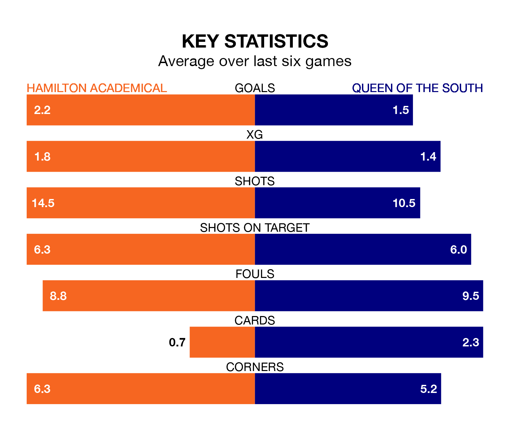

Hamilton Academical host Queen of the South in Saturday's match at the Fountain of Youth Stadium looking to bounce back from defeat last time out in League One.
The Accies, who sit second in the league after 30 games, fell to a 1-3 away defeat to Cove Rangers on March 23.
They face a Queen of the South side who picked up a win in their last match, a 2-0 victory against Alloa Athletic, and who sit eighth in the table.
With 63 goals in 30 games so far this season, Hamilton Academical are the league's second-highest scorers with 2.1 goals per game. And they are conceding fewer than average, letting in 23 goals at a rate of 0.8 per game.
Queen of the South, meanwhile, are below average scorers, with 1.3 goals per game, compared to a league average of 1.6. They have conceded 1.6 goals per game.
In the last 10 years, Hamilton Academical and Queen of the South have played each other on 10 occasions. Hamilton Academical won eight of them, Queen of the South one, and they drew once.
On average, the Accies scored 2.0 goals and the Doonhamers 0.7 in those matches.
Their last meeting was on February 3, when Hamilton Academical won 2-0 away.
In Kevin O'Hara, the Accies have one of the league's sharpest shooters so far this season. He has notched 13 goals in 30 appearances, to sit third in the scoring charts.
His goal rate of one every 181 minutes is quicker than that of Gavin Reilly, the Doonhamers's top scorer with a goal every 230 minutes, and a total of eight goals in 24 games.
The home team are in good form in League One, with four wins and a draw from their last six games.
With a win and two draws over that period, the visitors' form is much worse – they have taken five points from 18, compared to Hamilton Academical's 13.
Updated: 12:16 (UTC), 25/03/24